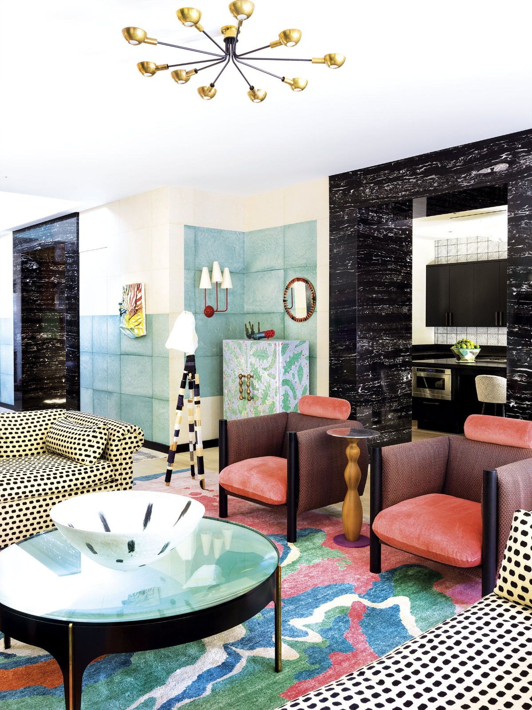
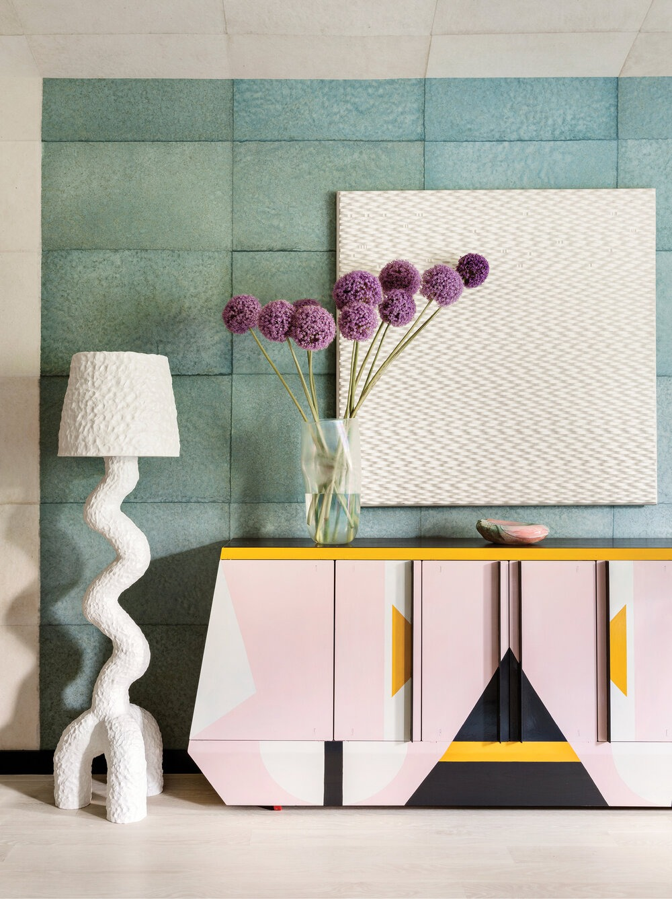
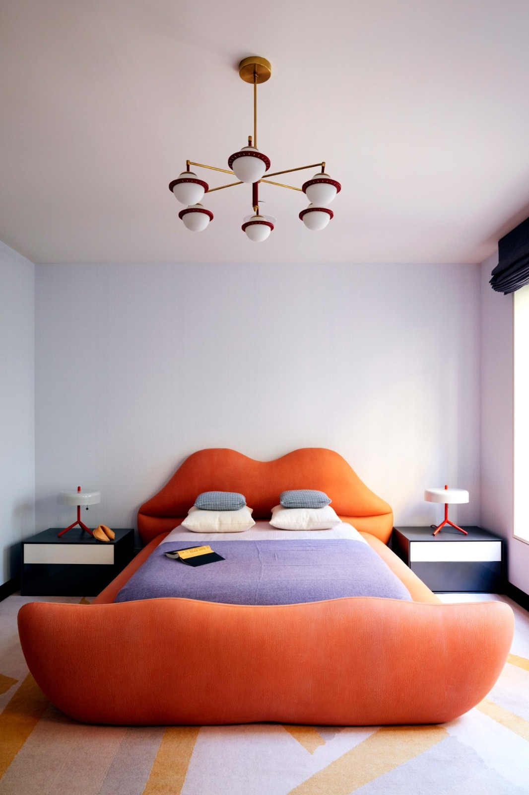
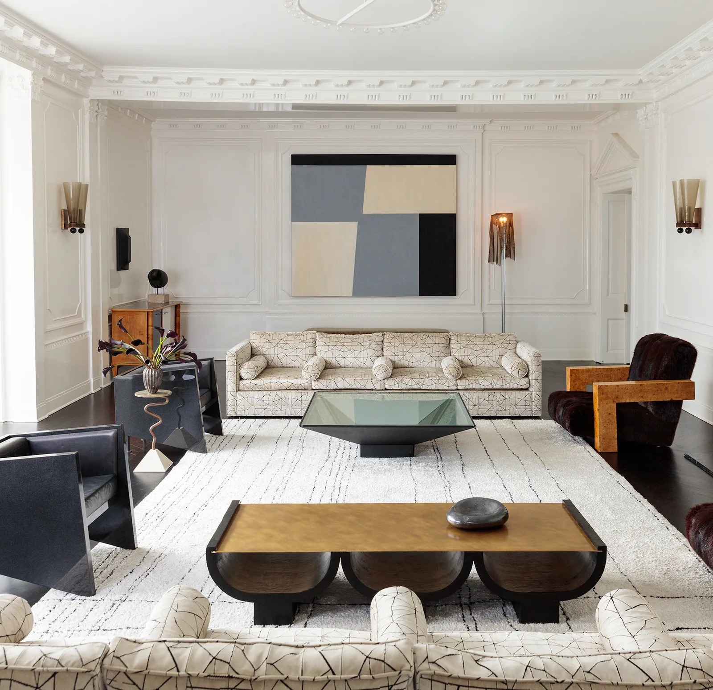
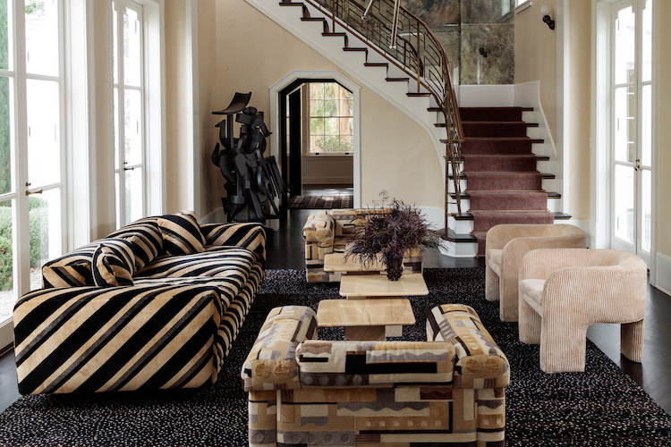

Influencias:
Kelly se inspira en muchas áreas diferentes del diseño, incluyendo moda, arquitectura, diseño gráfico, diseño de paisajes, arte y joyería.
Wearstler acredita a Peggy Guggenheimy Doris Duke como sus iconos de estilo. Como diseñadora de interiores, Wearstler encuentra influencia en el modernismo y
el viejo glamour de Hollywood creado por Dorothy Draper y William Haines.
Jacque Grange es citada como su diseñadora favorita, en parte por
"la forma en que reúne las cosas de diferentes períodos tan bellamente", y también nombra a David Hicks, Mark Rothko, Ettore Sottsass, Misha Kahn,y Piero Fornasetti
como una de sus influencias estéticas. Además, ha citado la obra del arquitecto Aldo Rossi como una influencia, así como de los artistas Victor Vasarely, Sheila Hicks
y Wearstler visita casas de subastas para recoger muebles y decoración para proyectos, así como para diseñar los suyos propios. Ella cree que el desorden es un gran
paso en la decoración del hogar, así como "alguien que compra todos sus muebles en un solo lugar. El resultado simplemente se ve plano; no tiene profundidad ni dimensiones,
como una sala de exposición” También ha criticado la tendencia de "muebles demasiado grandes", explicando que "para crear un diseño exitoso necesitas jugar con diferentes
escalas”.
Formulario
¿Conocías a Kelly Wearstler?
Del 1 al 10, ¿cómo de originales te parecen sus diseños?
Escribe una breve descripción de lo que te transmiten sus diseños:
Relación entre arte, artesanía y diseño:
Diría que sí que tiene relación ya que el diseño pretende promocionar su producto y con el arte busca provocar una emoción. En definitiva, Kelly da vida a una obra funcional.